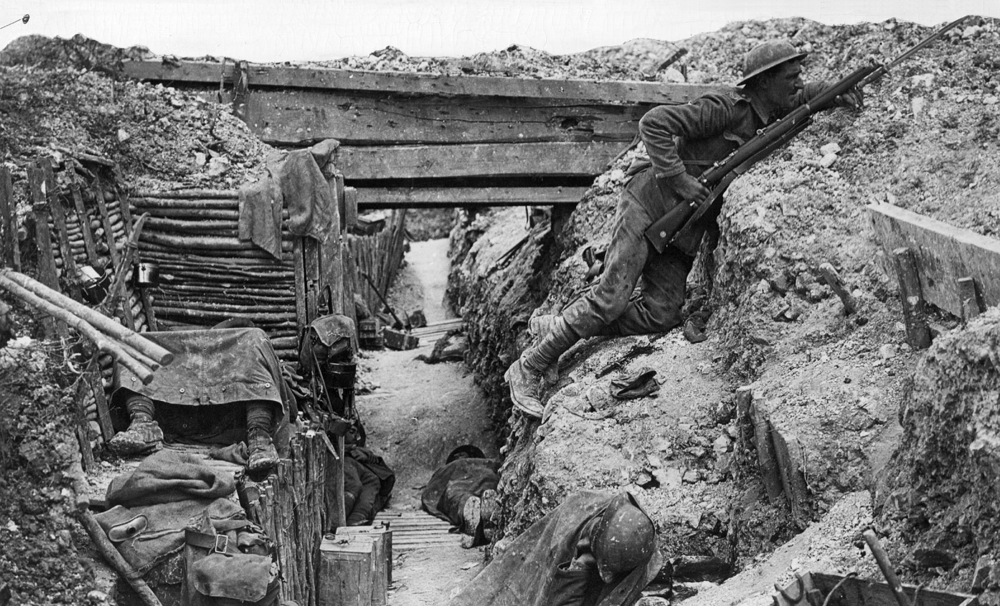

<!DOCTYPE html>
<html></html>
    <head>
        <meta charset="utf-8">
        <meta name="viewport" content="width=device-width, initial-scale=1">
        <title>okay, i'll stop :(</title>
    </head>
    <body style="background-color:#868800">
        <h1>Welcome To Aland's Not So Amazing Website Part 5: Lets go explore!</h1> <br> 

        <h2>Lewis & Clark Expansion </h2> <br>
        <br>
        <h3>
            In 1804, president Thomas Jefferson assigned Meriwether Lewis with the task of exploring areas westwards of the <br>
            Mississippi River that came with the Louisiana Purchase. Over the next 2 years that followed, lots of harsh <br>
            weather conditions, unforgiving terrain, dangerous water rapids, injuries, starvation, disease, and many friendly <br>
            or deadly Native Americans. About 40 men went to go explore in 1804. They traveled up the Missouri River into <br>
            what would be North Dakota now, where they built Fort Mandan (later to be Bismarck) and spent the winter around <br>
            the Mandan Sioux. Next spring, they left and hired Toussaint Charbonneau and his Indian wife, Sacagawea, who's main role <br>
            was to work as a guide and interpreter. <br> <br>
            
            The men continued to travel through Montana by horse over the Continental Divide <br>
            until they arrived at the Clearwater River. Soon, canoes were built to ride them to the Snake River and then to the <br>
            Columbia River, where they built Fort Clatsop (later Astoria, Ore.) and spent the winter. On the journey back, the group divided.<br>
            They soon then reunited to go down the Missouri to St. Louis, arriving in September 1806. One member <br>
            of the expedition had died. The journals kept by Lewis and others had documented the subjects of Indian tribes, wildlife, and <br>
            surrounding geography and did much to disprove the myth of there being an easy water route to the Pacific. <br>

            <br>

            <h2>
                HOW <i>Lewis & Clark Expansion</i> CONTRIBUTUES TO FREEDOM
            </h2> <br>
            The expansion was a big milestone that brough a lot of new research to medicine, and transportation throughout the <br>
            nation. Having more land means more opportunity for people to move to the nation and discover freedom in the country. 

        </h3>
        <br>
        <br>
        <h2>
            HEADS UP SOLDIER! You're going to war. <br>
        </h2>
     
        <a href="more5.html"></a><br>
    </body>
</html>


